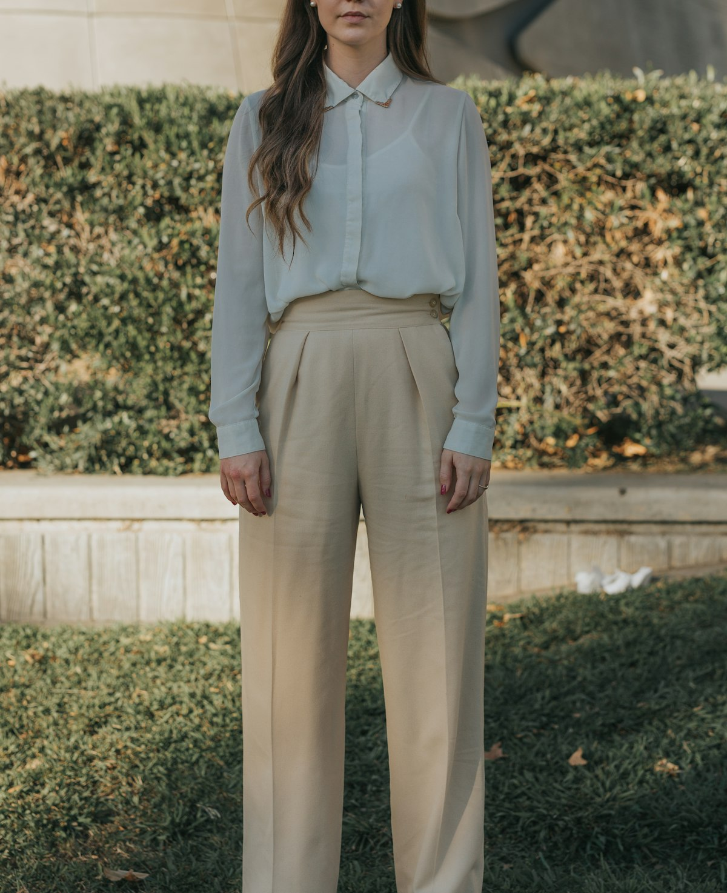

The Craft of Haute Bonneterie
Established at 181 Mercer Street, Seamless Hosiery was born from a singular obsession: to eradicate the coarse, mass-manufactured toe seam and restore hosiery to its rightful status as the foundation of personal sartorial well-being.
From Northern Italy's Valleys to Manhattan's Cobblestones
Brescia, Italy, has been the global epicenter of mechanical circular knitting for more than three centuries. Here, generations of hosiery master craftsmen developed the specialized mechanical cylinders and dial linkers capable of knitting gossamer-fine socks without structural compromises.
While industrial manufacturers modernized by replacing human operators with ultra-fast automated toe seamers that weld synthetic ridges across your toes, our atelier preserved the rare discipline of *rimaglio manuale*. In our workshops, skilled linkers align and join every stitch loop-by-loop, ensuring an uninterrupted plane of pure comfort.
Every pair is inspected against light tables, hand-pulled onto polished wooden blocking stretchers, and thermally set using gentle steam to lock fiber crimp and elasticity into place permanently.

Our Unbroken Craftsmanship Standards
Ethical Two-Ply Natural Yarns
We use exclusively combed, long-staple fibers—never short reclaimed fibers. Every yarn is two-ply twisted to enhance tensile durability and eliminate surface pilling.
True Hand-Linked Toe Closures
Zero raised seams, zero bulky stitching threads, and zero toe friction. Loop-by-loop closure guarantees your feet remain completely blissfully unbothered all day long.
Gentle Stay-Up Ribbed Cuffs
Engineered graduated micro-ribbing delivers dependable stay-up support along the calf without cutting off circulation or leaving deep red pressure marks.

181 Mercer Street, Manhattan
Our Manhattan salon welcomes clients for personalized hosiery wardrobe consultations, precise foot caliper measurements, and yarn tactile appreciation.
Feel the crisp, lustrous temper of double-mercerized Egyptian mako cotton, inspect our hand-linking dials in person, and curate custom seasonal sock boxes customized to your shoe wardrobe.
Reserve Salon Appointment